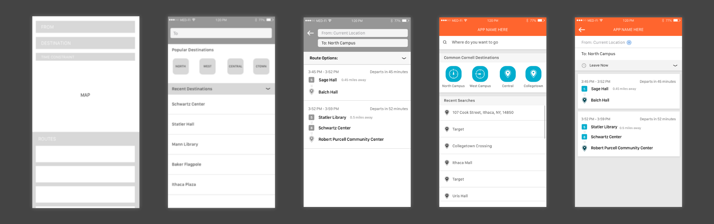

Part 1: Ideation and Interaction
TCAT | Design Lead | Spring 2017
Project Overview
This is a two part project that details the design process for creating a mobile experience to navigate the TCAT (Tompkins Consolidated Area Transit) bus system. This is Part I, which focuses on building the structure and navigation for the product. Part II focuses on creating a meaningful visual language for the app and can be found here.
Project Brief:
Design a mobile experience for Cornell students and residents of Tompkins County to easily navigate the Ithaca community using TCAT bus system. This application is primarily focused on the needs of Cornell students, but should be applicable to the entire Ithaca community.
Primary Problem:
As a Cornell University student in Ithaca, the bus is the main mode of transportation. Often, I want to confidently and punctually reach their destinations, but cannot because the bus system is confusing and its information is unreliable.
Goal:
Simplify the TCAT system through a route planning and navigation app.
Target User:
Least-experienced significant user group: first-year students at Cornell University. I wanted to make it easy for first-time users to easily access the information they might need without saturating the interface with content that power-users might not need.
User Research
The first step in this project was to conduct the user research and market research to ensure that our proposed problem and goals were relevant to the people we were designing this application for.
As our main target audience was the Cornell community, we conducted research on the entire spectrum of students and staff to best identify what they wanted in a transportation application. Below are the more relevant pieces of information and the main points we inferred from them.
1. Trust
What, if anything, do you worry about when you’re using the TCAT?
Most users listed out knowing if they are on the right bus at all as an issue. Because many different busses may frequent the same stop, users who are not familiar with the bus numbers and specific routes are often confused and worried about whether they are on the right bus. Additionally, users listed out bus tardiness and predictability as a big issue. For these two reasons we found that trust was a bug factor and part of designing this app would mean giving the user the most accurate and trustworthy information.
2. Clarity
What do you know about the bus stops you use? What do you want to know about unfamiliar ones?
Nearly every user cited location as the most known and sought after feature about a stop, followed by its name and a picture of it. One of the most intimidating parts of using an unfamiliar transit system is making sure you get to the right stop for the right bus at the right time. We wanted to assure and help users know exactly where they need to be.
3. Journey Status
When, in the entire travel process, is a map most important, if at all?
Users said they would like a map when getting to the bus stop, to help ease the trust issues that they have with the TCAT system. This was not the best worded question, being a bit prescriptive in assuming a map was needed in the solution. From the start of the semester, we wrestled with the idea of whether a map was truly necessary, and if so, where to put one. Ride14850, an existing TCAT app, did not include a map inside the application. While the app has sloppy UI and is difficult to use, the product thinking behind the flow of the app was strong, and proved that a map may not be needed.
That brings us to the competition. We turned towards many other map and transit applications to analyze how they displayed information and guided users to their destination.
A full list of interview transcripts and user responses can be found here.
Market Research
Ride 14850 (Direct Competitor- Current TCAT Bus System Application)
The primary application for the Ithaca community now, the default Ride14850 application’s biggest downfall is its confusing UI. However, the information provided to the user is relevant to most users and easy to understand. The problem is finding the proper way to navigate to that content. The application is littered with words and icons that do not make immediate sense to the user. Additionally, the selection process is confusing as the application focuses on names of bus stops rather than their location. During our research, we found that most users do not know the names of most bus stops except for a select few that they have learned over the years.
Google Maps

With Google Maps, the journey process is mapped into three different screens, all different pages. In regards to the information hierarchy, time is one of the most important factors when riding the bus, and every important time is grouped to the left for easy scan-ability. The bold, color coded connectors matching embarking and debarking on a route clearly link bus actions. Details like walking and bus stops are minimized but present. Google utilizes intuitive icons to reduce the information load and emphasizes scan-ability throughout the application.
Apple Maps (iOS 10)
Utilizing card overlay, Apple’s interface is centered around the map and the current location of the user. Unlike Google where the navigation is a page by page process, Apple maps uses card overlays and gestures that allow to easily dismiss the cards in anticipation that users will not be prioritizing this view. The attention here is focused on the user to discover and guide themselves through the map rather than read out directions. In regards to content, Apple uses much the same as Google’s, including their organization and information hierarchy.
Structure and Navigation
The first thing we looked at in designing this application from scratch was figuring out a defined structure and set of pages that can fit all the relevant information. In doing so, we wanted to limit the number of different pages away from the home screen so the user can focus on strictly finding a destination and quickest route to there.
Looking at relevant applications such as Google Maps, Uber, Lyft, and Apple Maps, we settled on the below page structure.
- Home Page/Searching
- Route Selection
- Selected Route Details
Home Screen
The Relevance of a Map
One of the early concerns was whether to use a map in the home screen and what we wanted the users to focus on upon first entering the application. Users noted that location of the bus stop as one of the most important things they were looking for. Additionally, looking at other applications such as Uber, Lyft, Google Maps …etc., the home screen and main focus is a map detailing out the current location of the user.
However, I found our use case to be a little different. Such apps were focused on users who constantly find themselves in new locations they are not familiar with. In contrast, our target users know the Ithaca community to some knowledge or learn about it through time.
Looking back at our user research, I chose to emphasize the destinations that users were looking to go rather than the context of individual bus stops. For the most part, users use the application to find routes to places they already know. Rather, the most important thing to them was not the context of where exactly this location was, but how to most efficiently get there.
Designated Locations
In shifting the focus of the main screen from a map to places students already know, we built an area that allows for users to access the most frequented general locations within the Cornell community. In this feature, we wanted to replicate something similar to the search feature within Apple Maps which offers a set of categories for users to choose from. Each of these designated areas houses multiple TCAT stops that users typically try and go to. We noticed in our user research, that users would go in and out between multiple searches to find the most efficient route to a specific area.
For example, North campus is the general area for freshman housing, gym, soccer field, and greek houses. Within North campus, there are multiple TCAT stops which students typically search for individually before deciding on a specific route. The goal of this feature was to allow an overview of all routes going to that general area.
Route Selection
Placing Route Options on the Route Selection Page
On the home screen, I found that the main use of the application was to find a route when needed rather than planning a route for the future. For that reason, I focused on selecting a destination rather than planning a route from a specific starting point to the destination. For this reason, I cut out a way to select a starting point and defaulted the search to starting from the users current location.
I decided to use route selection to make more advanced changes to the proposed route. Here, I allowed users to select a different starting location, along with flexibility of time as to when exactly they wanted to arrive/depart by. By default, I wanted the user to first think about where they wanted to go, and then plan out how they want to get there. The route selection page was the next step in allowing users to think about HOW they wanted to get there.
Information Hierarchy
Next, I wanted to figure out the information hierarchy for users when it came to selecting from a list of different routes. I wanted to use this hierarchy as the basis for our design as I moved toward higher fidelity. In this process I looked at relevant user research findings and alternative application solutions to come up with the following priority list:
- When the bus will arrive at a location (Departure Time)
- What the location is
- Distance to given starting point
- Destination arrival time
- Also relevant was whether a specific route required a transfer to a different bus
Below are a few explorations and what I was trying to emphasize with each one. After one more iteration, I chose C, wanting to emphasize scan-ability. This was important because different users prioritized different elements when choosing a route so I wanted to allow the user to easily compare many different elements at once.
Route Details
For this part of the application, I allocated the creative direction to a new member of the team, Matt Barker. Matt was originally placed on the team as a developer, but showed a lot of interest in learning the design process. I felt this feature made the most sense to Matt as it did not require many UI elements such as buttons or separate pages. Rather, I wanted him to focus on organizing the content and focus on the interaction design more than the visual aspect.
You can read Matt’s full case study on the Route Detail portion of the project here.
Medium Fidelity Flow
High Fidelity and Visual Designs Moving Forward
Below are the tentative high fidelity designs for the project. These designs will continue to change as the project progresses. These final designs were made in the last two weeks of the semester and are subject to change based on color palette, iconography, and any other UX changes our team may envision. Starting in the Spring, we plan on moving forward with this design to development and will ship out a product by the end of the semester (May 2017).